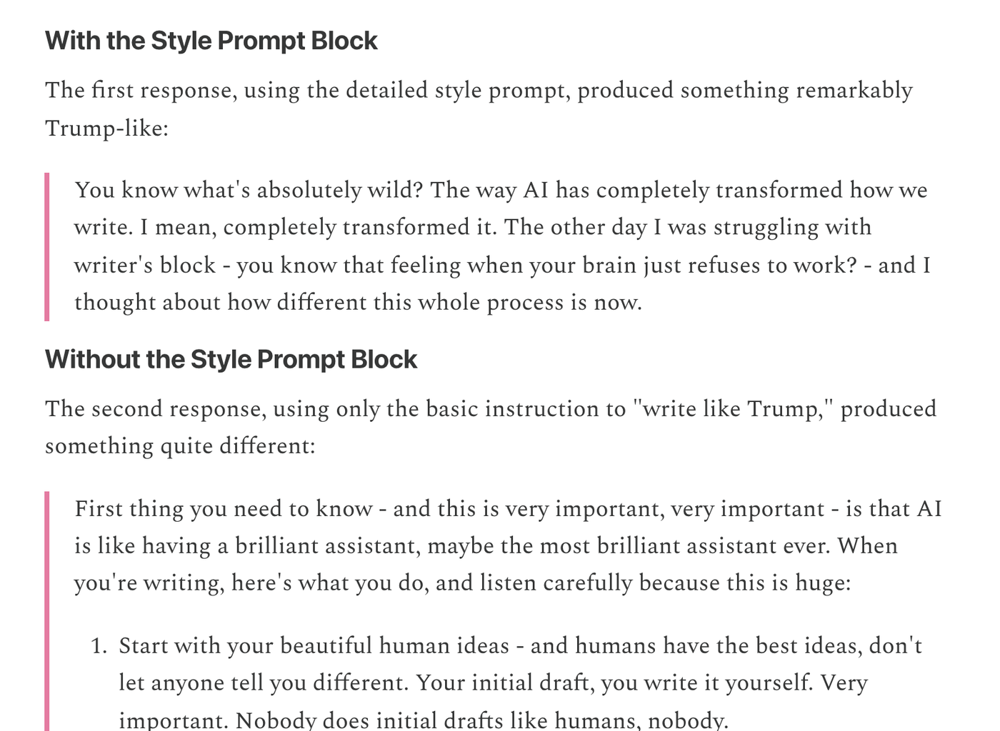
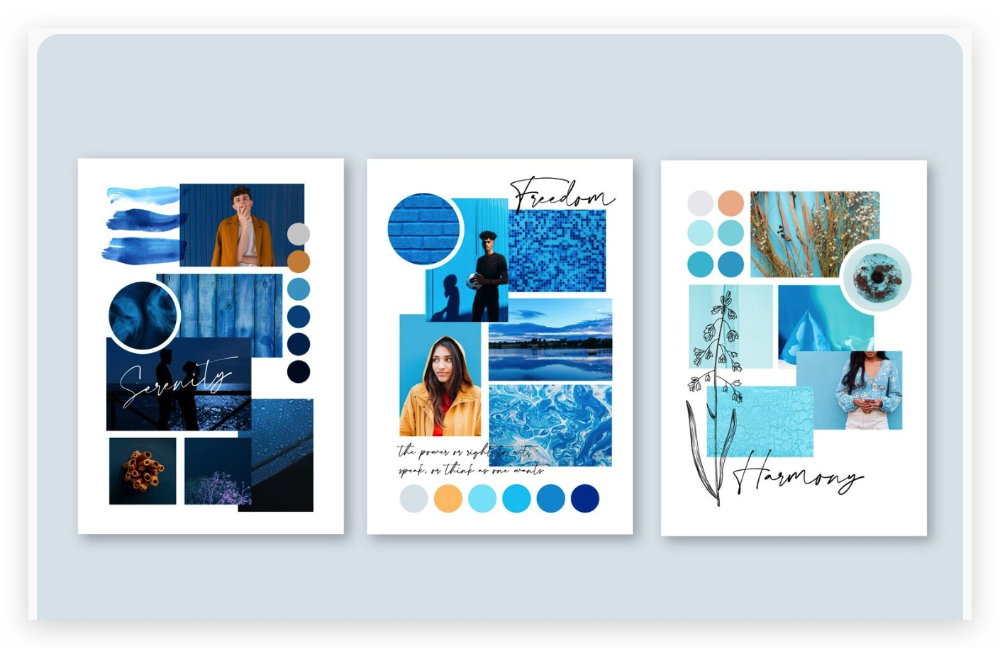

DEMO DAY SHARING超越模仿：
如何教會 AI 你的品味
Beyond Imitation: How to Teach AI Your Taste
AI agent × personalization × evaluation-driven creative work
2026-08-20 · Karen
01 / 11
01 · THE QUESTION
Creativity 不只是「好看」。
如果創意產出要有辨識度，我們至少需要同時保留兩件事：它是新的，而且它有用。
NoveltyUnique、unexpected，或打破原本的 pattern。
Value解決問題、傳遞訊息，或真的讓人採取行動。
Personalization 不是把某個人的口頭禪貼到每一句話，而是讓 AI 理解：這個人如何選擇、如何取捨，哪些細節不能被抹平。
02 / 11
02 · WHAT IS TASTE?
個人化特色，
不只是一組 marker。
同一個主題可以有很多正確寫法；真正讓人認出「這是你」的，是你如何安排訊息、做出取捨，以及在哪些地方刻意不照標準答案走。
Surface signals看得見的表現
用詞、句長、標點、色彩、版面密度、元件比例。
「或許」／括號旁白／留白比例
Structural signals藏在選擇裡的差異
論證 flow、取捨順序、反模式、收尾時的 reframe。
觀察 → 推論 → hidden-cost punch
SURFACE ≠ STRUCTURE
生成很多版本可以當起點；更有效率的做法，是讓每一次選擇都留下「為什麼」，再把重複出現的理由寫回規則。
03 · TWO ROUTES
Prompt optimization
or weight optimization?
兩條路都在做 personalization，但改動的位置不同；一條改變輸入的 context，一條改變模型的參數或有效參數。
PROMPT OPTIMIZATION不改模型，改變它看到的 context
蒐集 examples、負面範例、voice profile、rubric，再用 prompt／skill 注入模型。
快可追蹤容易迭代
模型本身不變；每次生成時，靠外部 instructions 引導行為。
WEIGHT OPTIMIZATION通常會改變模型的有效參數
Fine-tuning、LoRA、DPO 等方法會更新 base model 的 weights，或加入一組在推論時生效的 adapter weights。
更內化可分散表現成本較高
LoRA 不一定改寫原始 base model，但它改變模型實際運作時使用的參數；因此答案是：會改變模型行為，程度取決於方法。
務實順序：先用 prompt + evaluation 找到真正的差異訊號；確認 prompt ceiling 是瓶頸後，再考慮 weight-level optimization。
04 / 11
04 · THE CEILING
Prompt 可以讓 AI「像」，
也可能讓它 太像。
同一個「模仿川普語氣」的任務，只差一個 style prompt block，結果天差地遠——這是真實測試，不是想像的風險。

isophist.com · 2025 · Using Trump Style to Test AI Writing
- 只給「寫得像川普」這句指令，AI 大量依賴條列式 numbered list——川普本人幾乎不這樣說話
- 只抓表面標記（用詞重複、誇張語氣），卻少了真正的中途岔題、話題跳轉節奏
- 作者結論：這是「a caricature rather than an authentic stylistic imitation」——漫畫化，不是仿寫
有 style prompt block（先拆解真實演講找出具體規則）的版本，才被作者評為「remarkably Trump-like」。差別不是「用不用 AI」，是規則有沒有先被找出來。
06 · THE METHOD
把直覺變成證據，
再把證據寫回下一輪。
AI 負責產出與整理；Human 負責判斷、說明差異，並決定哪些訊號值得留下。
AI · DIAGNOSEBaseline
先產出未注入個人規則的基準答案，找出 AI 的預設傾向。
→
AI · GENERATEGenerate
依目前的 `rubric` 與 context 產出候選版本。
→
HUMAN · JUDGEValidate & feedback
比較「像／不像」，指出具體差異，補上一句可回寫的理由。
→
HUMAN + AI · CODIFYWriteback
Human 決定規則；AI 協助整理成 `rubric`／`parameters`。
Loop：用新案例重新 Generate，不是重建 Baseline
藍 · AI 產出／整理珊瑚 · Human 判斷／回饋綠 · 共同形成可查核規則
關鍵：品味不在 prompt 裡一次寫完；它在每次選擇、理由與 retest 中逐步成形。
07 · QUESTIONNAIRE DESIGN
讓人回答得快，
訊號才會留下來。
最容易持續完成的，不是抽象量表，而是「像 vs 不像」的比較軸，加上一句具體理由。
寫作工具探索 · 聲紋層 CHECK · 主題B
「混合辦公最大的風險，不是效率掉，是連結感悄悄流失……省下的時間該拿去繳這筆稅，不是拿去開更多會。」
理由：開頭「不是效率掉，是連結感悄悄流失」、結尾「該繳這筆稅，不是拿去開更多會」——精準踩到本人招牌的「不是 X 而是 Y」重定義句式，且位置對（破題＋收尾）。拆成具體特徵題，比籠統問「像不像」更快評、也更好回寫成規則。
1
題目控制在三題內每題只測一個可區分的面向，避免評分疲勞。
2
先二元判斷，再補理由理由比精細分數更能指出「差在哪裡」。
3
Reason 必須可以回寫把「太 AI」改成 flow、節奏、詞彙或取捨規則。
08 · EVIDENCE FROM CASES
不是全部通過，
而是抓到那一格缺口。
另一次寫作工具探索：4 主題 × 4 象限（baseline／只思考層／只聲紋層／兩層都注入），逐格比對。
那一格缺口，比 16/16 更有用。
「遠距／混合團隊管理」主題，AI 沒寫出「這條線我自己也還在反覆調整，沒有一次到位」的自白——違反本人「不可乾淨收斂、要留反架構師陷阱」的原則。全過的 16 格只證明像，抓到這一格才知道哪裡還沒像。
BASELINE四象限拆解：純內容 vs 只思考層 vs 只聲紋層 vs 兩層都注入。
FROWN固定 4 題聲紋特徵清單逐格比對，揪出 B 主題缺口。
CODIFY待執行——把「不可乾淨收斂」寫成可查核規則。
RETEST待執行——需要本人親自比對後才能驗證泛化。
09 · TRADITIONAL MOODBOARD
傳統做法：
拼 Moodboard，找「這種感覺」。
設計團隊蒐集風格參考圖，貼成一張 moodboard，讓大家對齊方向、快速凝聚共識。

目的：快速對齊「感覺」
不需要精準語言，用圖片本身當共通語言——「像這種」比長篇描述更快達成共識，適合早期發散階段。
直覺快速難拆解
但「喜歡這種感覺」通常混雜色彩、版面、文案、品牌印象——很難知道大家真正同意的是哪一層。
10 · SPECIAL USE CASE
延伸應用：
同一套方法，也能找出團隊的 style signal。
把「這種感覺」拆成 Text／Visual／Layout 的具體評分軸度，逐項比對平均分與分歧度，而不是用平均數字悄悄抹掉差異。
共識訊號
Casual／Conversational／Warm／Concise 全面領先
分歧訊號
每一軸 sd≈16–31，個別評分仍分散，不是全員一致投票
11 · TAKEAWAY
品味不是 prompt 的內容，
是可驗證的 loop。
1. 先建立 baseline，知道 AI 的預設答案。
2. 用具體比較與 feedback，找出 structural delta。
3. 寫回 rubric／parameters，再用新案例 retest。
4. 一開始就把評測軸度拆清楚，比事後拆解更快收斂。
盲目生 10 篇，不如認真失敗 3 篇。
真正可累積的不是一份靜態 prompt，而是一台會自我修正的評測機器。
11 / 11